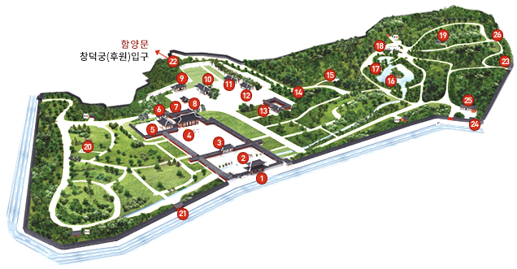
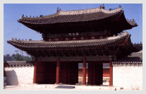

창경궁은 성종 14년(1483년)에 세조비 정희왕후,예종비 안순왕후,덕종비(추존왕)소혜왕후 세분의 대비를 모시기 위해 옛 수강궁터에 창건한 궁이다. 수강궁이란
세종 즉위년 1418년,세종이 상왕으로 물러난 태종의 거처를 위해서 마련한 궁이다.
창경궁은 창덕궁과 연결되어 동궐이라는 하나의 궁역을 형성하면서,독립적인 궁궐의 역할을 동시에 창덕궁의 모자란 주거공간을 보충해주는 역할을 하였다.
성종대 창건된 창경궁은 선조 25년(1592)임진왜란으로 모든 전각이 소실되었고, 광해군 8년(1616)에 재건되었다. 그러나 인조2년(1624) 이괄의 난과 순조30년
(1830)대화재로 인하여 내전이 소실되었다. 화재에서 살아남은 명정전,명정문,홍화문은 17세기 조선시대 건축양식을 보여주며, 정전인 명정전은 조선왕궁 법전
중에서 가장 오래된 건물이다.
국보1점
제226호 명정전
보물7점
제384호 홍화문
제385호 명정문 및 행각
제386호 옥천교
제818호 통명전
제846호 풍기대
제851호 관천대
제1119호 팔각칠층석탑
등록문화재1점
제83호 대온실
역사
창경궁의 역사
년도
내용
1418년(세종즉위년 11월초 3일)
상왕전(태종)신궁으로 수강궁 영건
1483년(성종 14년)
수강궁터에 창경궁 영건
1592년(선조 25년)
임진왜란으로 소실
1616년(광해군 8년)
명정전,문정전,환경전,인양전,공사청,홍화문 등 중건
1623년(인조 원년)
인조반정시 저승전 소실
1624년(인조 2년)
이괄의 난으로 통명전,양화당,환경전 등 소실
1633년(인조 11년)
통명전,양화당,환경전,함인전 등 중건
1670년(현종 11년)
건극당 건립
1777년(정조 원년)
자경전 건립
1779년(정조 3년)
월근문 건립
1790년(정조 14년)
통명전 화재
1830년(순조 30년)
환경전 화재로 함인정,경춘전,숭문당,영춘헌,오행각,빈양문 소실
1834년(순조 34년)
통명전,경춘전,환경전,여휘당 등 중건
1857년(철종 8년)
선인문,동북소,부장청,위장소,주자소의 대청과판당 등 60여칸 화재
1877년(고종 14년)
창경궁 수리
1909년(순종 2년)
창경궁내 동 · 식물원 개설
대한민국
1950년 6월25일
한국전쟁으로 폐원
1954년
서울 수복으로 개원
1963년 1월18일
사적 제123호 지정
1983년 10월
동 · 식물 서울대공원에 인계
1983년 12월30일
창경궁 본래 이름으로 환원
1983년 12월31일
공개관람 중단
1985년 4월
복원공사 착공
1986년 8월23일
복원공사 준공, 공개관람 재개
창경궁 미리보기
번호를 클릭하시면 사진과 함께 자세한 설명이 나옵니다.

홍화문(弘化門) (보물 제 384호)

창경궁의 정문으로 홍화(弘化)는 '조화를 넓힌다',즉 덕을 행하여 백성을 감화시키고 널리 떨친다는 뜻이다. 창경궁 창건 당시에 처음 건립되었다가 임진왜란 때 소실되어 1616년(광해 8)에 재건된 건물이다.
홍화문은 국왕이 직접 백성들을 만났던 곳이기도 하다. 영조는 1750년(영조 26)에 균역법을 시행하기 전에 홍화문에 나가 양반과 평민들을 만나 균역에 대한 의견을 들었다. 정조는 1795년(정조 19)에 어머니 혜경궁의 회갑을 기념하여 홍화문 밖에 나가 가난한 백성들에게 쌀을 나누어 주었고, <홍화문 사미도(弘化門賜米圖)>라는 기록화에 그 모습이 자세히 묘사되어 있다.